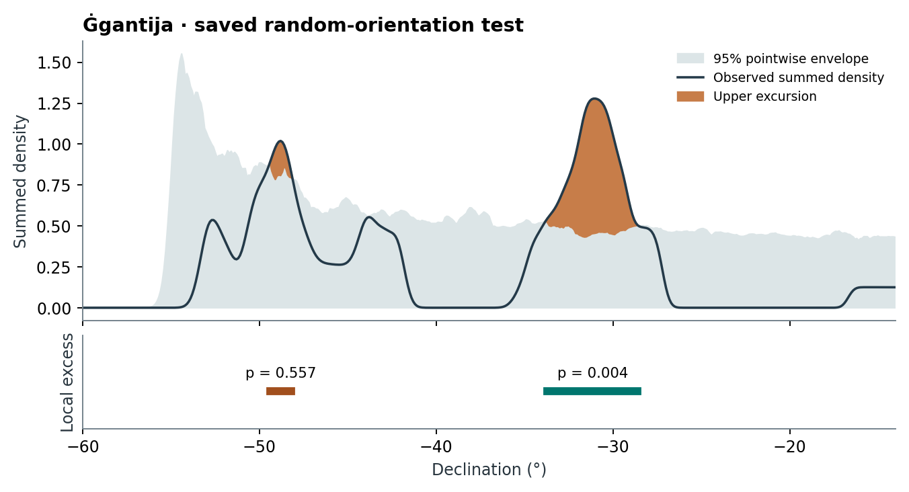

12 Testing orientation distributions
Implementation. skyscapeR 2.0.9004, R/statistics.R and R/model-simulation.R. The procedures below operate on a summed probability density (SPD) of measured orientations. Silva (2020, sec. 4) introduced the random-orientation test. Silva and Lomsdalen (2025, “Methodology” and “Landscape tests”) extended the framework to specified landscape and astronomical hypotheses, including models particular to individual sites. The two functions answer different questions even when they score exactly the same observed curve.
For the construction of the empirical and transformed measurement curves, see the density chapter.
12.1 Random orientations
randomTest() asks whether independent draws of structural bearings, with the observed sample size, measurement errors and site geometry, could produce departures at least as large as those observed. Randomness is specified in azimuth. A uniform distribution of bearings generally induces a non-uniform distribution of declinations. Even on a level horizon, the mapping from bearing to declination has turning points; terrain relief changes the mapping further (Silva 2020, secs 3–4).
For each replicate, the code samples one centre per measurement with replacement from seq(0, 360, by = source_spacing). It reconstructs a normal or uniform measurement density with that measurement’s uncertainty, then applies the route selected by the input. The discretisation matters: if the grid includes both endpoints, two entries denote north. The source spacing determines the draw grid; .res determines the comparison grid. These are different numerical choices.
| Input | What is compared |
|---|---|
| Azimuth PDF, no horizon | Sum the reconstructed densities in azimuth. Use this route for a hypothesis about the distribution of bearings around the compass. |
| Azimuth PDF and one shared horizon | Sum in azimuth, then transform the SPD to declination using the common site. The transformation takes the current atmospheric settings. |
| Transformed declination PDF, original azimuth PDF and horizon(s) | Start each simulated measurement in azimuth, transform it individually with the matching horizon and the saved atmospheric settings, then sum. The original measurements and horizons must correspond in order. |
The second route constructs one aggregate before transformation. The third preserves the contribution of each site’s skyline and measurement uncertainty through the transformation. Report the route used: with differences in interpolation, truncation and site geometry, the two routes need not return identical curves. Optional normalisation gives each final SPD unit trapezoidal area. It cannot correct a misassigned horizon.
12.2 Specified orientation models
modelTest() asks whether the observed curve is compatible with a proposed distribution. Silva and Lomsdalen (2025) constructed site-specific slope-aspect models from terrain around the Maltese temples and a shared wind model from reversed wind-direction frequencies. The innovation of that paper was the capacity to test specified alternatives to uniform bearings, including site-specific ones. The general function accepts the resulting distributions; generating and justifying the landscape or astronomical model remains the analyst’s responsibility.
The empirical PDF sets the coordinate system. Supply one table for a common model or one table per observation in matching order. A row gives a candidate angle and a nonnegative weight. Sampling probabilities are proportional to the weights. For a continuous density tabulated on an uneven grid, a cell’s weight should approximate its integrated mass, for example density times represented cell width. Using its ordinate alone can favour a densely sampled sector for purely numerical reasons.
Each replicate draws a centre for each observation. Directly constructed PDFs retain their normal or uniform uncertainty family, using the stored uncertainty unless overridden. For a declination PDF from coordtrans(), the default instead translates each piecewise-linear measurement curve. If is the stored density and , a candidate produces the template . Its width, asymmetry and multiple peaks survive translation before grid interpolation. A positive-weight candidate that would push density outside ±90° causes an error. An explicit unc for transformed input selects a normal simulation density. A translated template assumes that the original shape applies at the new mean; a different skyline sector may produce a different shape. This is a modelling choice worth testing when the result depends on it.
12.3 Shared scoring algorithm
Let be the observed SPD and the simulated SPDs on a common grid. At each , all values define the sample standard deviation and quantile bounds. For a two-tailed 95% envelope, the bounds are the 2.5th and 97.5th percentiles. For an upper-tail 95% envelope, use the 95th percentile alone. The implementation calls R’s default sample quantile. Every curve is scored against these same bounds. For a two-tailed test the unsigned contribution is
Set the contribution to zero where all curves agree; omit the lower term in an upper-tail test. Only strict crossings contribute. If the simulations agree but the observation differs, pooling keeps the observed departure eligible and the fit records that angle in constant.departures. The global score is . It is a grid sum: keep grid spacing fixed across curves. The defaults are 0.1° for randomTest() and 0.01° for modelTest(). Both default to 1,000 simulations, two tails, 95% pointwise coverage and no final normalisation.
For the global test let be the number of simulated scores greater than or equal to . The returned value is (North, Curtis, and Sham 2002; Dufour 2006). At , zero exceedances gives ; complete ties give 1. Exchangeability requires that the observed and simulated datasets be processed comparably under the specified null. More simulations improve rank resolution. They cannot repair a null that ignores dependence among structures.
For a local result, find contiguous crossings of the same bound with at least two grid points spanning at least 0.5°. Sum the departures within each observed cluster. Repeat the cluster search in every simulation and retain its largest cluster score, or zero if none qualifies. Compare each observed cluster with these simulated maxima using the same inclusive rank. A two-tailed search includes both signs. The global test uses all departures, including those too narrow for local reporting. The local correction accounts for searching this grid under the complete null; it does not locate an individual significant endpoint or adjust for comparing many archaeological subsets (Maris and Oostenveld 2007; Sassenhagen and Draschkow 2019). North-crossing clusters are split at the stored 0°/360° seam. A split can affect qualification and the local score.
12.4 What changed since the publications?
| Decision | Published baseline | Version 2.0.9004 and consequence |
|---|---|---|
| Reference envelope and global departure | Silva (2020, §4) describes the departure as area. Its accompanying R script already standardises departures using the mean, standard deviation and quantiles of the simulations alone. The Malta application invokes this framework. | The observation enters the pooled bounds and scale exactly once, alongside the simulations. Each excursion is divided by the pooled pointwise standard deviation. A given density excess can therefore contribute differently at a low-variance angle and a high-variance angle. |
| Monte Carlo tail | Silva (2020, eq. 2) prints a leading complement with defined as the number of simulated scores at least as large as the observation. With that definition the printed expression reverses the desired tail. The paper already cites North et al. (2002). | Both routines explicitly count exceedances including ties and return . A large observed departure with few exceedances gives a small p-value. The archived 2020 script instead complements a count of scores strictly below the observation. Algebraically this yields before rounding, so zero was possible. The current formula guarantees a positive attainable minimum. |
| Local selection | Silva (2020, §4) compares the observed region with simulations scored over that same observed interval. Silva & Lomsdalen (2025) report local results within this framework. | Each simulation now undergoes its own interval search. Its maximum cluster supplies the comparator, which accounts for choosing the region after viewing the curve. Earlier and current local p-values answer different questions. |
| Non-uniform nulls and uncertainty | The 2025 application already used shared and site-specific models, drew an azimuth from the appropriate model, and assigned the structure’s measurement uncertainty. | The reusable interface accepts weighted candidates in either tested coordinate. For transformed declinations it can preserve a measured template, including asymmetry, with an explicit alternative using a specified uncertainty. The template route generalises the published azimuth procedure. |
The accompanying 2020 code also permuted the measurement uncertainties in the random draws and excluded observed intervals of width at most five times its declination-grid spacing. Version 2.0.9004 retains the observation-to-uncertainty pairing and applies a fixed angular minimum to both observed and simulated clusters. Standardisation itself was already present in 2020; symmetric pooling and searching each simulated curve are the substantive changes. The source comparison uses the archived 2020 implementation, lines 300–382. These comparisons concern the published algorithms and the archived current source. They do not establish that the conclusions of either paper change. That would require replaying the corresponding data, models and historical implementation. The build’s NEWS instructs users to refit when seeking current local and global inference (Silva 2020; Silva and Lomsdalen 2025).
12.5 Reading a fit
Consider 999 simulations and an observed global score exceeded or tied by 9 simulated curves. The global p-value is 10/1000 = 0.010. For an observed excess over a particular declination interval, suppose 49 simulations have a cluster anywhere on the searched grid at least that large. Its adjusted local p-value is 50/1000 = 0.050. Comparing only at the observed declinations would answer the different question addressed by the original fixed-interval calculation. These counts are illustrative.
For reproducible comparisons set the seed before fitting and specify the same comparison grid and tail across runs. Read metadata$global.pval for the dataset-wide test and metadata$local.pval for the local intervals. Save metadata$inference and metadata$local.inference with the result. In this build they identify the pooled and maximum-cluster algorithms. The returned envelope and constant-simulation departures are retained in data.
12.6 Reading the Ġgantija worked fit
The vignette loads a saved randomTest() fit with 500 simulations, then uses plot.skyscapeR.sigTest() with show.local=TRUE. Its global p-value is 0.004. In the local table the excess from −33.7° to −28.6° has adjusted p = 0.004, the smaller excess near −49° has adjusted p = 0.557, and the deficit row contains no cluster. The plotted excess and deficit rows share the angular axis with the observed curve; show.pval independently controls display of the global value. print.skyscapeR.sigTest() and pval2stars() summarise these stored probabilities. The open circle marks the larger p-value. Overlaying a Gacrux band or selecting the significant positive interval for findTargets() does not recompute the test or assign a probability to Gacrux as the intended target (Silva 2020; Silva and Lomsdalen 2025).

12.7 Strengths, limits and evidence
For a simple count in predefined angular bins, R’s chisq.test() accepts category counts and hypothesised probabilities (R Core Team, n.d.). Here the objects being compared are whole measurement-density curves. A doorway spanning a range of bearings can contribute across that range, and a declination null can incorporate the site’s skyline. These are methodological advantages for that question. A small global p-value rejects the specified model; it gives neither the identity of a celestial target nor a probability for intentionality.
Neither routine automatically simulates shared construction episodes, uncertainty in fitted model parameters or selection of sites after inspecting the data. If the null is fitted to the same orientations, its fitting step may need to be repeated within simulations. Interpret interval boundaries as descriptions of the observed excursions. Retain the input PDFs, site order, model tables, seed, grid, inference metadata and package revision. Sampling takes place in the caller so that the same seed can be used across worker counts.
The archived package audit checks a saved Ġgantija result and the plotting of local findings. It checks reproducibility of a recorded result, not the family-wise rejection rate over independent datasets. The outstanding validation is to measure rejection rates under known generating models, varying sample size, horizon heterogeneity, the north seam and grid spacing. No historical or new significance fits were run for this manual revision.
Related function entries
az.pdf(), coordtrans(), dec.pdf(), modelTest(), plot.skyscapeR.sigTest(), print.skyscapeR.sigTest(), pval2stars(), randomTest(), spd().